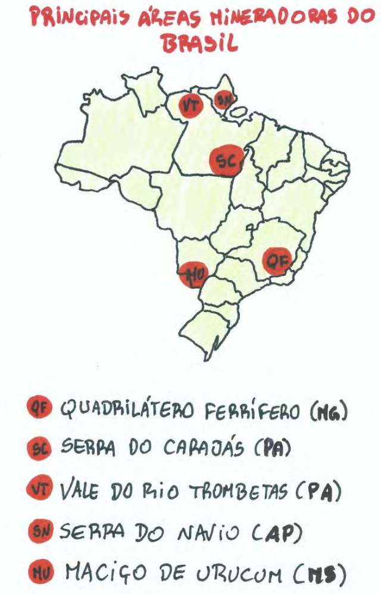

19/11/2020
Área de captação natural da água que chove e escoa para um único ponto de saída.
Corrente de água permanete ou não, que leva excesso das águas continentais superficiais até os oceanos, mares e lagos.
Massas líquidas continentais delimitadas por terrenos ou água acumulada em depressões
Regiões onde a precipitação de neve é superior ao derretimento
Água que ocupa “vazios” em formações rochosas Solos porosos (arenosos) - facilitam a infiltração da água; solos pouco permeáveis (argilosos rochas) - dificultam a infiltração da água
PARA IR ALÉM:
Bacia amazônica: maior do planeta (3 904 393 km2); drena terras de 45% do território; Rio Amazonas é o mais extenso (7 100 km) e de maior volume; Amazonas é um rio de planice com afluentes em planaltos; maior potencial hidrelétrico (menos aproveitado); sempre serviram como canais de entrada para a região e principal meio de comunicação
Bacia Platina: constitui três bacias secundárias: bacia do Paraná, Uruguai e do Paraguai; os três rios formam o Rio da Prata quando se encontram em território argentino.
Bacia do Paraná: maior aproveitamento hidrelétrico do país; localizam-se várias hidrelétricas (maior é a de Itaipu - 20% da produção de energia elétrica); banha regiões industriais do Sul e Sudeste; trechos importantes para navegação (hidrovia do Tietê)
Bacia do Paraguai: atravessa o pantanal e é amplamente navegável; pequeno potencial hidrelétrico; projeto para construção de hidrovia está parado por falta análise dos impactos socioambientais
Bacia do Uruguai: curso superios é planáltico; poucos trechos navegáveis; baixo aproveitamento hidrelétrico, apesar do grande potencial
Bacia do Tocantins ou Tocantins-Araguaia: drena 9,5% do território nacional; rio Tocantins é o principal, desagua no Golfão Amazônico; longos trechos navegáveis; nos anos 70 foi construída usina hidrelétrica de Tucuruí (segunda maior do país) para atender consumo do Projeto Carajas (Pará); regime tropical (cheias no verão e vazantes no inverno); projeto para construção da hidrovia Tocantins-Araguaia (problemas ambientais e de navegação)
Bacia do Nordeste*: Compreende vários estados nordestinos e alguns da região norte; muitos rios são temporários em virtude do clima da região
Bacia do Sudeste*: Formada pelos rios Ribeira do Iguapé (SP), Itajaí (SC), Taquari, Jacuí e Camaquã (RS); baixo potencial hidrelétrico
Bacia do Leste*: Composta pelos rios: Paraíba do Sul (SP e RJ), rio Doce (MG e ES) e Paraguaçu (BA); O Paraíba do Sul tem crescente aumento da poluição, devido o surgimento da primera megalópole entre São Paulo e Rio de Janeiro; Bacias do Leste e Sudeste sofreram em 2014/15 grave seca
Bacia do São Francisco: Drena 7,5% do território nacional; Rio SF (integração nacional) é navegável entre MG e BA; atravessa áreas de clima semiárido (Polígonos das Secas), sendo fundametal pelas populações locais; através da agricultura irrigada, ocorre a produção de frutas como melão e uva; possui alto potencial hidrelétrico com várias usinas: Três Marias, Sobradinho e Paulo Afonso
As tres últimas são as Bacias Secundárias ou Costeiras, agrupadas pela localização ao longo do litoral. O rio principal de cada uma tem sua vertente, delimitando uma bacia única.
REFERÊNCIAS:
PARA IR ALÉM:

PARA IR ALÉM: